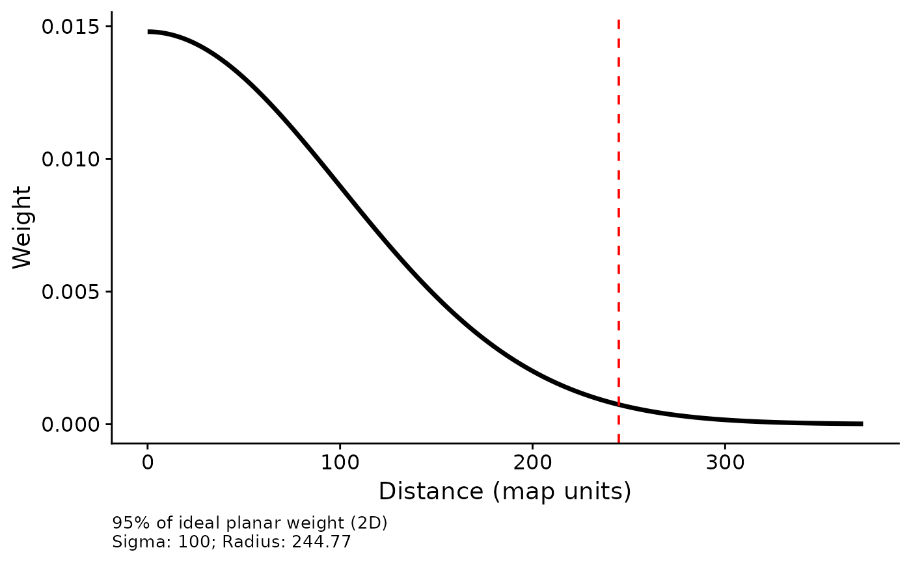
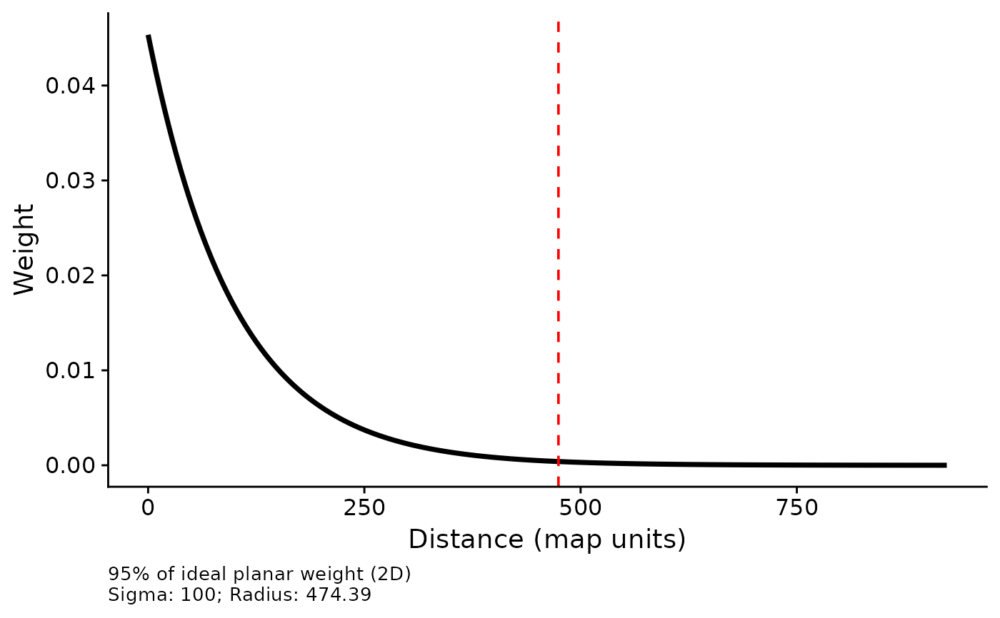
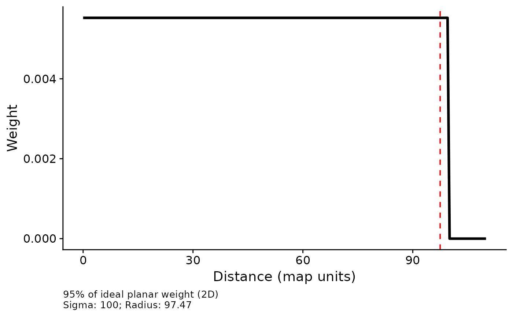
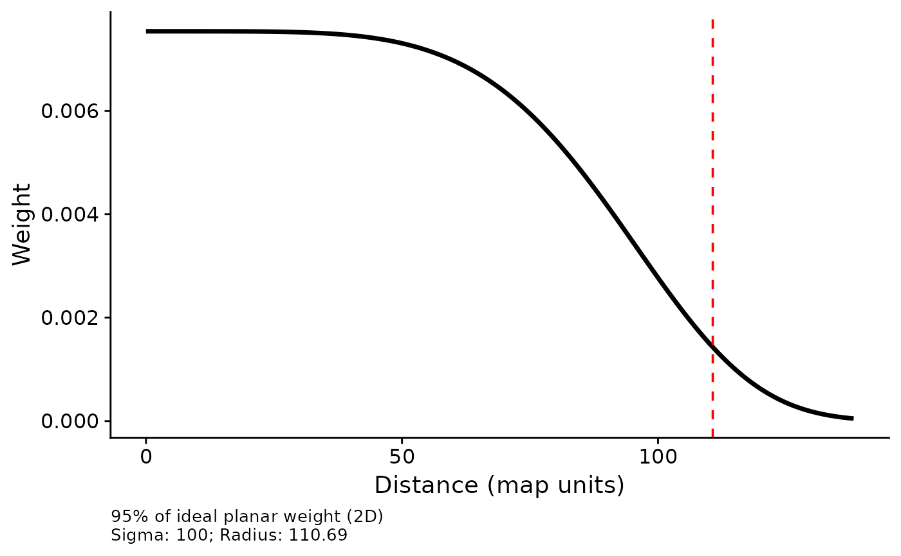
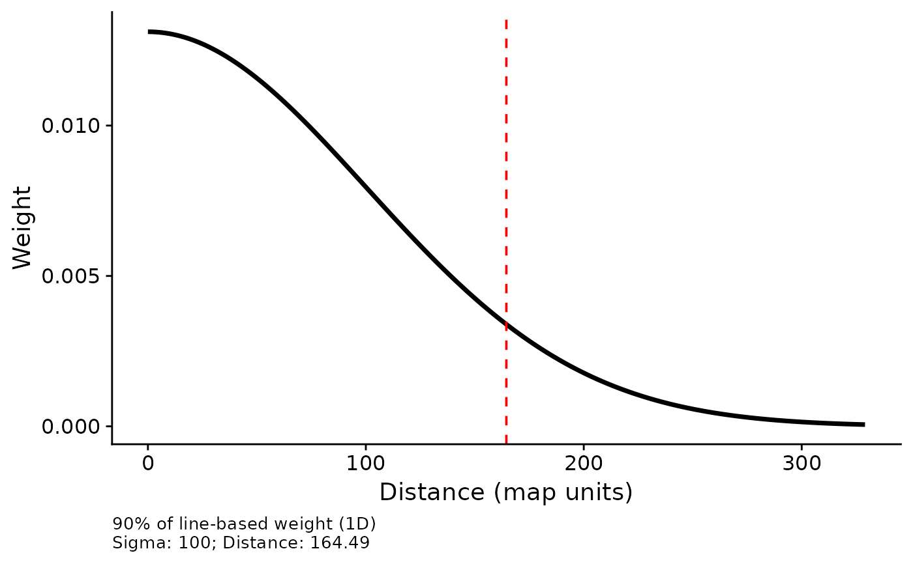

Draws the weight a kernel gives to a raster cell as a function
of its distance from a survey point, and marks the effective distance that
holds a chosen share of the kernel weight. No fitted model is needed, so
use it to explore how kernel type, sigma, and shape translate into spatial
reach before you run multiScale_optim(). To plot the kernels of a fitted
model, with their confidence intervals, use plot.multiScaleR(). The
kernels are defined in multiScaleR-kernels.
Usage
plot_kernel(
prob = 0.9,
sigma,
shape = NULL,
kernel,
scale_dist = TRUE,
add_label = TRUE,
dimension = c("2d", "1d"),
...,
beta = NULL
)Arguments
- prob
Numeric between 0 and 1 (exclusive). Share of the ideal kernel weight held within the marked distance, under the selected
dimension. Default:0.9.- sigma
Positive numeric scalar. The kernel scale parameter, in the map units of the projection used with
kernel_prep()(for example, meters). Larger values spread the weight over greater distances. Forkernel = "fixed"it is the buffer radius. Required.- shape
Positive numeric scalar. Shape of the exponential power kernel (
kernel = "expow"), required for that kernel and ignored for the others.shape = 1gives the negative exponential curve,shape = 2the Gaussian form (with standard deviation sigma / sqrt(2)), and larger values a flat top with a steep edge that approaches a fixed buffer. The default refit search ofmultiScale_optim()keeps the shape between 0.75 and 50. Default:NULL.- kernel
Character. The kernel to draw:
"gaussian","exp"(negative exponential),"expow"(exponential power), or"fixed"(fixed-radius buffer). Required. The weight functions are tabulated in multiScaleR-kernels.- scale_dist
Logical. If
TRUE(default), a dashed red vertical line marks the distance that holdsprobof the kernel weight under the selecteddimension.- add_label
Logical. If
TRUE(default), a caption below the plot reports the percentage of weight, the dimensional definition, sigma, and the marked distance. Shown only whenscale_dist = TRUE.- dimension
Character.
"2d"(default) marks the radius of the circle that holdsprobof the ideal kernel weight on a plane."1d"marks the original line-based distance, which holds that share along a transect through the point. Seekernel_dist().- ...
Not used.
- beta
Deprecated former name of
shape. It is still accepted, with a warning, and will be removed in a future release. Supplying bothshapeandbetawith different values is an error.
Value
A ggplot2 object with distance in map units on the x-axis and
relative kernel weight on the y-axis. It prints when returned at the
console. Add layers or themes to customize it.
Details
How to read the plot. The curve shows the relative weight given to a
single cell at each distance. Weights are normalized to sum to one over the
200 plotted distances, so only the shape of the curve and its relative
height matter. The curve is not the distribution of total weight in
concentric rings. Under the default "2d" definition the marker accounts
for the area of each ring, which grows with distance, so the area under
the plotted curve to the left of the marker is not prob. Sigma remains a
kernel parameter, not the marked radius. For a Gaussian kernel with
sigma = 300 m, the 90% marker sits at about 644 m under "2d" and 493 m
under "1d".
The x-axis extends to the distance holding at least 99.9% of the weight
under the selected definition (or prob, if larger). For the fixed kernel
it extends to 1.1 times sigma. Marker positions use the unrounded distance,
and the caption rounds it to two decimal places.
Versions 0.7.4 and later mark the "2d" radius by default. Set
dimension = "1d" to reproduce plots from earlier versions. Both are ideal
continuous-kernel distances. They do not reflect truncation at max_D,
raster edges, missing cells, or cell geometry at a particular site.
See also
multiScaleR-kernels, kernel_dist(), plot.multiScaleR().
vignette("v02-user-guide", package = "multiScaleR") compares the four
kernels side by side.
Examples
## Radius holding 95% of the ideal planar weight, sigma = 100 map units
plot_kernel(prob = 0.95, sigma = 100, kernel = "gaussian")

# The negative exponential reaches farther for the same sigma
plot_kernel(prob = 0.95, sigma = 100, kernel = "exp")

# Equal weight out to sigma, then zero
plot_kernel(prob = 0.95, sigma = 100, kernel = "fixed")

# A flatter top and steeper edge than the Gaussian
plot_kernel(prob = 0.95, sigma = 100, shape = 5, kernel = "expow")

## The original line-based definition marks a shorter distance
plot_kernel(sigma = 100, kernel = "gaussian", dimension = "1d")
